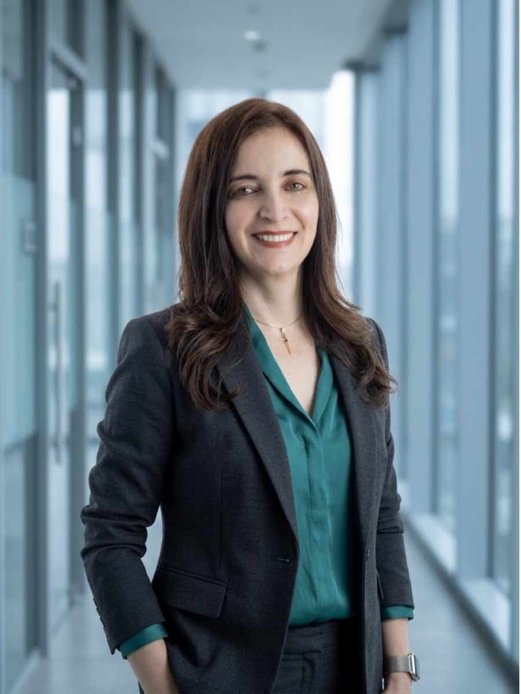

Ruth Jaramillo
Socia fundadora de Digital Change Advisors · Adopción sostenible de la inteligencia artificial
Ruth Jaramillo es socia fundadora de Digital Change Advisors y cocreadora de los Frameworks Ágiles del Modelo ARIA. Durante veinticinco años ha trabajado como consultora en productividad humana para la competitividad, y sostiene que la adopción de la inteligencia artificial falla siempre por la misma causa: las personas dejan de usar la herramienta cuando nadie diseñó las condiciones para que el cambio se sostenga en el tiempo.

La fuga de productividad de la inteligencia artificial
La fuga de productividad de la inteligencia artificial es la distancia entre los empleados que reportan ser más productivos con IA y las empresas que no encuentran ese efecto en su EBIT. Esa fuga es medible, tiene causas humanas identificables y se cierra en ciento veinte días.
McKinsey, "The state of AI in 2026: On the road to ROI", 25 de agosto de 2026. Encuesta a 1.719 ejecutivos en 97 países, en campo entre el 4 de mayo y el 8 de junio de 2026.
- 80 % reporta que la IA mejoró su productividad individual.
- 37 % atribuye al menos algún impacto en el EBIT de su organización.
- 6 % atribuye un impacto de 5 % o más del EBIT y lo califica como significativo.
- 44 % escala IA en toda la empresa, frente a 38 % el año anterior, sin que la proporción con impacto en EBIT haya variado.
Dos obras publicadas
| Título | Registro |
|---|---|
| Sembrando Semillas de Vida | Sin registro público confirmado |
| Mentalidad Digital (coautoría con César Lozano) | Edición propia — 2023 |
El método aplicado a la propia operación de la firma
AI Return Test
55 preguntas · menos de 30 minutos. El diagnóstico ejecutivo que ubica a tu organización dentro del Modelo ARIA.
El interlocutor correcto responde por el resultado de negocio
Ruth trabaja con quien responde, ante su Junta, por el retorno financiero de la inversión en IA — no con quien administra la capacitación, el cambio cultural o el bienestar del equipo. El diagnóstico no sustituye esas disciplinas; las precede, y las deja fuera del alcance del Modelo ARIA.
Si tu mandato es formación, gestión del cambio o liderazgo como servicio, este no es el punto de partida correcto para ti. Si tu mandato es el número que la inversión en IA debe mover en el P&L, sí lo es.
Retorno documentado en 120 días, con garantía contractual de re-intervención si no se alcanza.
Sin compromiso · Tu reporte es confidencial